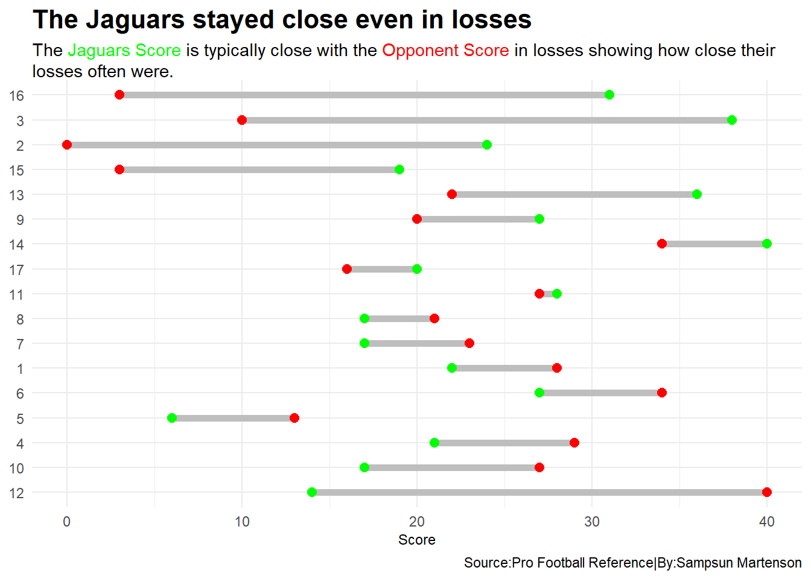
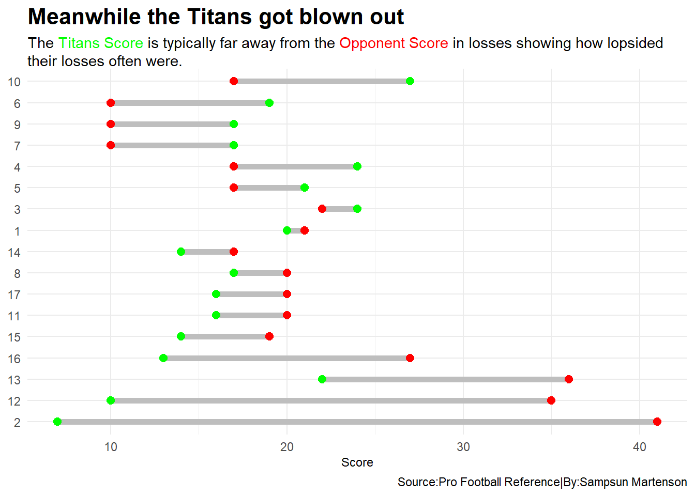

The Rise and Collapse of the Jaguars and Titans in 2022
jaguars
titans
NFL
Author
Sampsun Martenson
Published
May 7, 2023
In the 2022-2023 NFL season the Jacksonville Jaguars and the Tennessee Titans had an entwined destiny that seemed impossible to come to fruition at the half way point of the season.
First we can look at the point differential for the Jaguars and Titans losses.
Code
jaguars <- jags%>%group_by(Game) %>%mutate (PointDifferential = (ScoreTm-ScoreOpp)) %>%select(Game, PointDifferential, ScoreTm, ScoreOpp)ggplot() +geom_dumbbell(data=jaguars,aes(y=reorder(Game, PointDifferential), x=ScoreTm, xend=ScoreOpp),size =2,colour ="grey",colour_x ="green",colour_xend ="red")+theme_minimal()+labs( x ="Score",y ="Week",title="The Jaguars stayed close even in losses", subtitle ="The <span style = 'color:green;'>Jaguars Score</span> is typically close with the <span style = 'color:red;'>Opponent Score</span> in losses showing how close their losses often were.", caption="Source:Pro Football Reference|By:Sampsun Martenson") +theme(plot.title =element_text(size =16, face="bold"),axis.title =element_text(size=9),axis.text.x =element_text(size=9),axis.title.y =element_blank(),plot.subtitle =element_textbox_simple() )

Code
titans <- titan%>%group_by(Game) %>%mutate (PointDifferential = (ScoreTm-ScoreOpp)) %>%select(Game, PointDifferential, ScoreTm, ScoreOpp)ggplot() +geom_dumbbell(data=titans,aes(y=reorder(Game, PointDifferential), x=ScoreTm, xend=ScoreOpp),size =2,colour ="grey",colour_x ="green",colour_xend ="red")+theme_minimal()+labs( x ="Score",y ="Week",title="Meanwhile the Titans got blown out", subtitle ="The <span style = 'color:green;'>Titans Score</span> is typically far away from the <span style = 'color:red;'>Opponent Score</span> in losses showing how lopsided their losses often were.", caption="Source:Pro Football Reference|By:Sampsun Martenson") +theme(plot.title =element_text(size =16, face="bold"),axis.title =element_text(size=9),axis.text.x =element_text(size=9),axis.title.y =element_blank(),plot.subtitle =element_textbox_simple() )

Code
ggsave("image.png")
Then we can look at the total passing yards differential for the Jaguars and Titans
Code
jo <-c("firstdowns"=352)to <-c("firstdowns"=277)total <-c("Jaguars"=352, "Titans"=277)waffle( total/10, rows =5, title="Jaguars vs Titans: Total first downs", xlab="1 square = 10 first downs", colors =c("gold", "lightblue"))+theme_minimal()+labs( x ="Score",y ="Week",title="Meanwhile the Titans got blown out", subtitle ="The <span style = 'color:green;'>Titans Score</span> is typically far away from the <span style = 'color:red;'>Opponent Score</span> in losses showing how lopsided their losses often were.", caption="Source:Pro Football Reference|By:Sampsun Martenson") +theme(plot.title =element_text(size =16, face="bold"),axis.title =element_text(size=9),axis.text.x =element_text(size=9),axis.title.y =element_blank(),plot.subtitle =element_textbox_simple() )
Finally we can look at the difference in Passing Offense
Code
jagsnfl<- nflstats%>%filter(Tm =="Jacksonville Jaguars")titansnfl<- nflstats%>%filter(Tm =="Tennessee Titans")ggplot() +geom_point(data=nflstats, aes(x=TD, y=Yds...7, size=Cmp), color="red", alpha=.3) +geom_point(data=jagsnfl, aes(x=TD, y=Yds...7, size=Cmp), color="darkcyan") +geom_point(data=titansnfl, aes(x=TD, y=Yds...7, size=Cmp), color="blue") +geom_vline(xintercept =5.7) +geom_hline(yintercept =5.55) +geom_text_repel(data=jagsnfl, aes(x=TD, y=Yds...7, label=Tm),color="black") +geom_vline(xintercept =5.7) +geom_hline(yintercept =5.55) +geom_text_repel(data=titansnfl,aes(x=TD, y=Yds...7, label=Tm),color="black")+theme_minimal()+labs( x ="Passing Touchdowns",y ="Passing Yards",title="Meanwhile the Titans got blown out", subtitle ="The <span style = 'color:green;'>Titans Score</span> is typically far away from the <span style = 'color:red;'>Opponent Score</span> in losses showing how lopsided their losses often were.", caption="Source:Pro Football Reference|By:Sampsun Martenson") +theme(plot.title =element_text(size =16, face="bold"),axis.title =element_text(size=9),axis.text.x =element_text(size=9),axis.title.y =element_blank(),plot.subtitle =element_textbox_simple() )